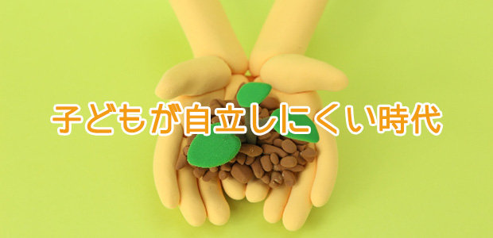

前回（⇒伸びる受験生に多く見られる自立心 果てして自立心は育つのか？）から引き続き子どもの「自立」についてお話します。
多くの親は、我が子に「自立した人間」になって欲しいと願うものです。
しかし皮肉なことに、今の時代子どもたち（若者も含めて）はますます自立しにくくなっているといえます。
その理由として大まかに言って次の２つの要因をあげたいと思います。
①社会的要因
②心理的要因
社会的要因は、以前触れたことがありますが社会の複雑化に伴い学齢期が長くなることに起因するもの。つまり学生時代が長くなりそれだけ社会に出るのが遅くなる。モラトリアム（猶予期間）が長くなるということは、それだけ成熟が遅くなるということです。
もう１つは、少子化などにより親が子どもに手をかけるようになり、経済的にも子どもを早く独立させる必要がなくなった結果、青少年の幼児化が進んでいる。
３０過ぎても親元にいたり引きこもっている現象もこれらの表れかも知れません。
心理的要因の方は、社会的要因ともからみますが親自身が子どもを手元に置き、いつまでも面倒を見ていたがる傾向があること。
子どもの方も、親の庇護をずっと受けられる安心感、居心地の良さを感じることが多いことがあげられます。
要するに親離れ子離れができにくい状況だということです。
自立しないメリット…！？
このように子どもの「自立」を阻む背景を見てくると、これを困ったことだと感じる人は多いと思います。
しかし問題はそう単純なものではないのです。
それを言う前に、まず自立の意味をハッキリさせたいと思います。
自立とは文字通り自分の足で立つこと。誰の助けも借りず依存せず独立している状態。だから自立している人は成熟している人とも言い換えられる。
一方、自立していない状態とはまだ成熟に至っていない、子どもっぽい未熟なレベルであるといえます。
このように自立＝成熟、その反対が未熟ととらえるなら、やはり成熟が良いことで未熟は良くないと考えがちです。
ところが、この「自立心に乏しい子どもっぽさ」がこれからの時代逆にメリットになると考えることもできるのです。
どういうことでしょうか。
たとえばIT産業。日本でもアメリカでもこれらの分野では２０代など若くして起業する人も多い。彼らに共通するのは、ある種の子どもっぽさ、子どもの心を失っていない（child like）心性にあります。
IT産業だけでなく、アニメやゲームキャラなどの映像関連、音楽やデザインなどアート系なども同様です。
一般企業でも新商品の開発や企画、宣伝などの分野では、あまり社会常識に適合しすぎた「成熟型（自立型）」の人間より子どもの心をもつクリエイティブな人間のほうが活躍の可能性が高い。
事実社会学者の一部には、20～30年後「子どものように遊ぶ」が仕事においてもキーワードになるだろうと言う人もいます。
大人の自立心と子どもらしい発想
ただし、ここで誤解しないでほしいことがあります。上のようなクリエイティブな仕事で成功するためには「自立しなければいい」ということではありません。
当たり前ですが、自立していない人が誰でもその分野で成功するわけではなく、うまくいくのは天才的な資質に恵まれたごく一部の者に過ぎません。
しかもその優秀な若者だけで始めたIT産業が他社との交渉や金融機関との話し合いなど、いわゆる「大人の駆け引き」に失敗して崩壊する例が多くみられるのです。
これなど「子どもっぽさ」が仇になった例ですが、自立心の乏しさが足を引っぱる結果も珍しくないということです。
ここから分かること。
それはこれからの時代「大人として自立」していることと、子どもの心をもった創造性の両立が必要であるということです。
要するにバランスの問題です。
自立することの大切さは言うまでもなく、社会人として独り立ちするための必須の前提です。時代がどんなに変わろうと、価値観が変動しようと、自分が何者でどのような人生を送るかを明確にすること。
そうして自らの生き方を主体的に選択し、社会的責任を果たしていくことは当然のことだし、それが自立した人間のあり方だと思います。
だから
自立していることがベースになる。
その上で、これからの時代「柔らかい創造性」をも身につけることが大切と言えるでしょう。
親こそが子離れする必要がある
ここまでの話を踏まえて親のあり方に話を移すと、私の考えではこうなります。
①子どもの可能性を信じる
②物わかりの良い親を演じない
子どもの可能性を信じることはいつの時代も必要な親のあり方ですが、特にこれからの時代は必須と言えます。
子どもの得意なこと。興味や関心のあること。それらが時に非現実的に思えても「世の中はそんな甘いものじゃない」などと頭ごなしに否定しないことです。
昔のように生活の糧を得るために、好きでもない仕事をイヤイヤやるのではなく、真に興味のあること、好きなことこそを仕事にすることが成功と幸せへの近道になるからです。
もう一つ。物わかりの良い親を演じないとはどういうことでしょうか。
これは人間として基本的で最低限必要なマナーやモラルに関するものです。
たとえば、自分からきちんとあいさつをする。
約束は必ず守る。引き受けた仕事は最後まで責任を持つ。人の悪口は言わない。しかし自分の意志は明確にし、主張すべきは主張する。等々。
これらの要素はどれも社会的自立を果たす上での基本的なモラルですが、思春期までに身につけなくては手遅れになります。
単に口で言うだけでなく、身体化させなくてはなりません。
当然子どもの反発、反抗が予想されます。
物わかりの良い親を演じたい人にとって、これらのしつけは高いハードルになるかも知れませんが、逆にこれらの要素が身につけば、どんな分野においてもそれなりに「成功」するでしょう。
子どもを本気で自立させようと思うなら、そのようなモラル（規律）をうるさく守らせることも必要なのです。反抗するなら反抗させれば良い。
なぜなら自立とは、まず第一に親からの自立を意味するからです。
しかし不思議なことに、子どもは親に反発しながらも親が本気で伝えたいメッセージは受け取るものです。
今の時代、最初に触れたように子どもの自立をはばむ最大の障壁はむしろ「親が子どもを手放そうとしないこと」だと理解すれば、親の役目は何であるかも自ずと見えてくるはずです。
そんなに難しいことではありません。
子どもの夢を尊重し、子どもの良さを伸ばしていけるよう配慮しながらも譲れない一線は頑なに守り妥協しない。
人として最低限の守るべき道は守らせる。
優しく見守る愛と厳しさ
これは考えてみれば昔から言われている「子育ての基本」にすぎませんね。
しかし、今の時代もう一度この不変の法則に立ち返って考えてみることが大事ではないでしょうか。